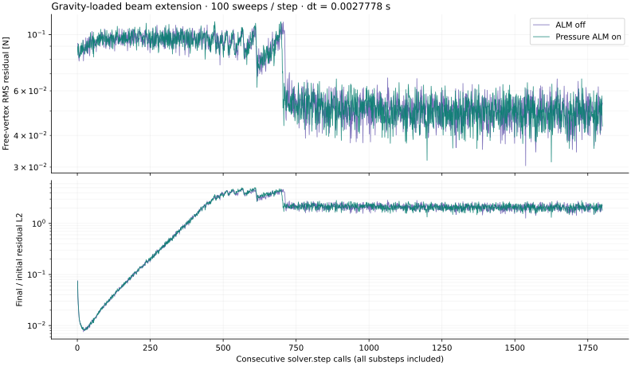
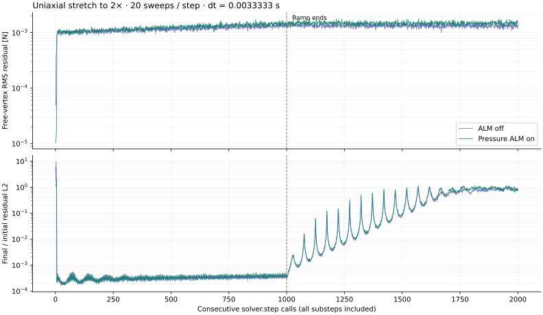
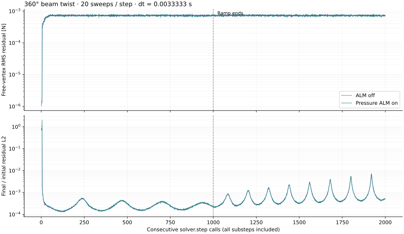
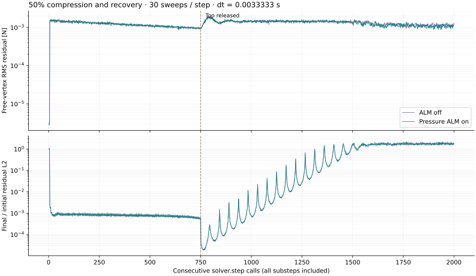
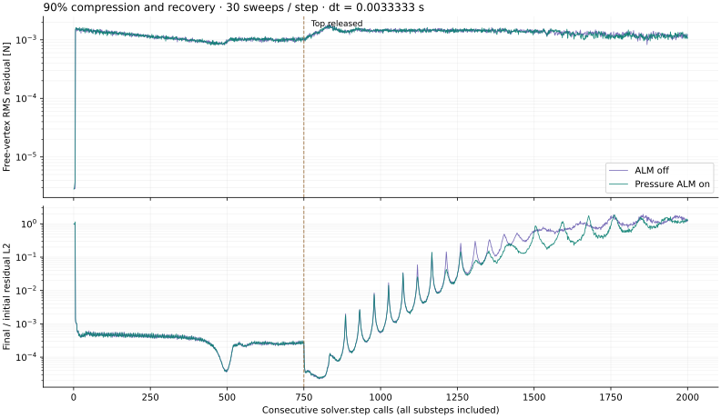
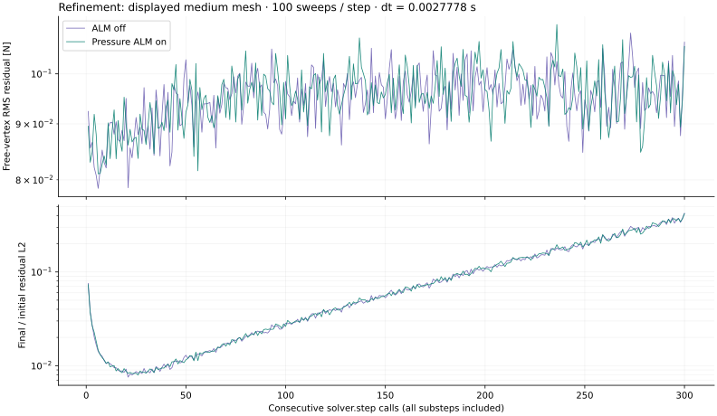
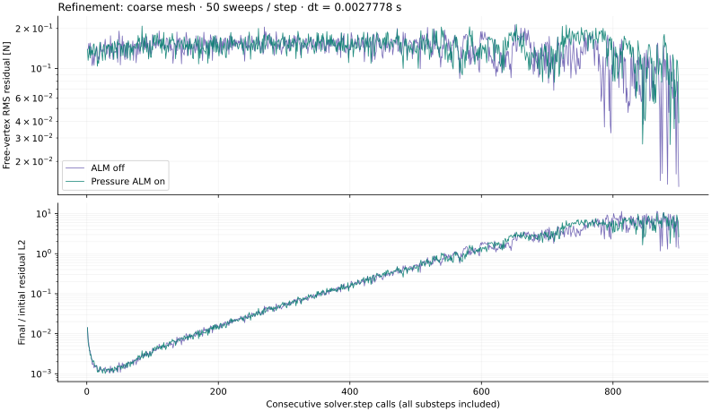
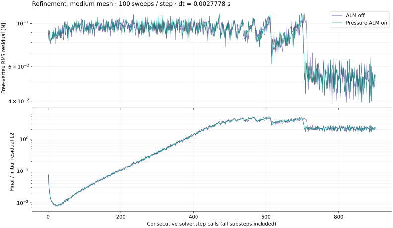
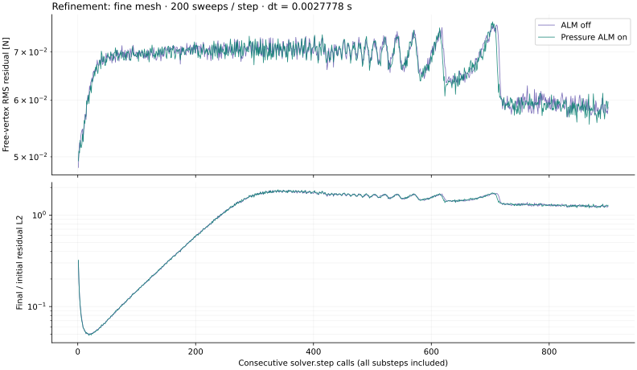
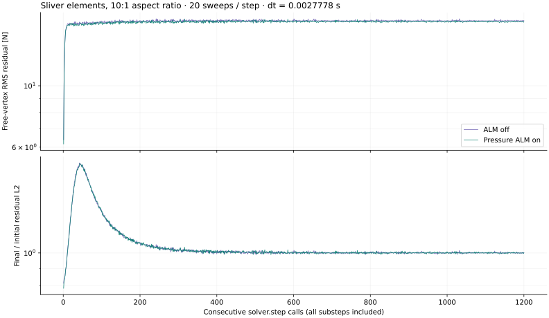

ALM on vs off.
Residuals across consecutive timesteps.
The six volumetric tests from PR #2901, including their auxiliary compression and mesh-refinement runs, evaluated on the ALM branch with identical scenario settings.
Equal iteration budgets
ALM on uses the implemented pressure-only tet ALM, with rho_scale=1 and retained history. ALM off uses the ordinary material path in the same solver source. The optional full-matrix mode and the unintegrated SVD proposal are not used.
| Trajectory | Steps / mode | Sweeps / step | Mean RMS off [N] | Mean RMS on [N] | On / off |
|---|---|---|---|---|---|
| Gravity-loaded beam extension | 1,800 | 100 | 0.067714 | 0.067429 | 0.996× |
| Uniaxial stretch to 2× | 2,000 | 20 | 0.0012404 | 0.0013517 | 1.090× |
| 360° beam twist | 2,000 | 20 | 0.00071844 | 0.00071859 | 1.000× |
| 50% compression and recovery | 2,000 | 30 | 0.0012845 | 0.0012823 | 0.998× |
| 90% compression and recovery | 2,000 | 30 | 0.0012588 | 0.0012513 | 0.994× |
| Refinement: displayed medium mesh | 300 | 100 | 0.095096 | 0.095413 | 1.003× |
| Refinement: coarse mesh | 900 | 50 | 0.13858 | 0.14506 | 1.047× |
| Refinement: medium mesh | 900 | 100 | 0.085564 | 0.085084 | 0.994× |
| Refinement: fine mesh | 900 | 200 | 0.067296 | 0.067031 | 0.996× |
| Sliver elements, 10:1 aspect ratio | 1,200 | 20 | 17.117 | 16.991 | 0.993× |
A ratio below 1 means lower mean residual with ALM. These are comparisons at equal iteration counts, not equal wall time. The mean weights every solver step equally, including the driving and settling phases.
Original PR checks
The unmodified example test_post_step() and test_final() routines ran under both modes. The solver factory also instruments auxiliary runs created inside test_final(), so the 90% compression and three refinement resolutions use the selected ALM mode.
| PR test | ALM off | ALM on |
|---|---|---|
| extension | PASS | PASS |
| stretch | PASS | PASS |
| twist | PASS | PASS |
| compression | PASS | PASS |
| refinement | PASS | PASS |
| sliver | PASS | PASS |
The residual comparison is distinct from the PR’s displacement, volume, recovery, and stability checks. In particular, the sliver case passes its stability bounds while retaining about 17 N of mean RMS residual in both modes. Passing that test does not establish convergence of the per-step solve.
What the residual measures
r_i = f_elastic,i(x) + f_damping,i(x, x_start) − m_i (x_i − x_hat,i) / dt² R_L2 = sqrt(Σ_free ||r_i||²) [N] R_RMS = R_L2 / sqrt(number of free vertices) [N per free vertex] R_rel = R_L2 / max(R_L2 at x_start, 10⁻¹² N)
The elastic force uses the original stable Neo-Hookean law: P = μF + [(λ_L+μ)(det F−1)−μ] cof F. Tet damping uses P_d = (2 k_d/dt) F (FᵀF−F_startᵀF_start). Rest volume and shape gradients assemble both onto particles. Fixed or zero-mobility vertices are excluded so their constraint reactions are not counted as solve error.
x_hat is the native solver’s inertial target, containing incoming velocity, gravity, and external force. Its float32 value and the accepted float32 positions are converted to float64 for residual evaluation. This evaluates the discrete objective the solver actually sees. It also exposes float32 position-resolution limits at small timesteps.
Measurement happens after every solver call, including all substeps. Each mode starts from the same model and follows its own continuous trajectory without resets. Corresponding step indices therefore share the prescribed loading schedule but need not have identical incoming states. This is a rollout comparison, not a same-state single-step contraction experiment.
Validation: the independent CUDA float64 force calculation matches NumPy, and the finite-difference energy-gradient relative error is 2.54e-10. All source-model fingerprints, timestep sizes, mesh sizes, iteration counts, and recorded step counts match between modes. Instrumented and plain native stepping produce bitwise-identical positions and velocities in six additional checks: extension and stretch for four frames, and compression through release at frame 152, each with ALM off and on. Instrumentation check results.
Gravity-loaded beam extension
525 vertices · 1,600 tetrahedra · 1,800 consecutive steps · 5.000 simulated seconds.

The ALM-on mean RMS is 0.996× the ALM-off mean; ALM on has lower RMS at 51.0% of corresponding step indices.
| Metric | ALM off | Pressure ALM on |
|---|---|---|
| Mean RMS [N] | 0.067714 | 0.0674293 |
| Median RMS [N] | 0.055619 | 0.0558051 |
| 95th-percentile RMS [N] | 0.101552 | 0.101974 |
| Final-step RMS [N] | 0.0537028 | 0.0434868 |
| Median final / initial L2 | 2.06014 | 2.05382 |
| Minimum det(F) across steps | 0.998487 | 0.998488 |
ALM-off CSV · ALM-on CSV · Standalone SVG plot · Run details

Uniaxial stretch to 2×
176 vertices · 450 tetrahedra · 2,000 consecutive steps · 6.667 simulated seconds.

The ALM-on mean RMS is 1.090× the ALM-off mean; ALM on has lower RMS at 18.1% of corresponding step indices.
| Metric | ALM off | Pressure ALM on |
|---|---|---|
| Mean RMS [N] | 0.00124037 | 0.00135169 |
| Median RMS [N] | 0.00125873 | 0.00137765 |
| 95th-percentile RMS [N] | 0.00144052 | 0.00160309 |
| Final-step RMS [N] | 0.00137059 | 0.00149501 |
| Median final / initial L2 | 0.000507775 | 0.000521571 |
| Minimum det(F) across steps | 0.915014 | 0.91501 |
Mean RMS by motion phase
| Phase | Off [N] | On [N] | On / off |
|---|---|---|---|
| Driven phase | 0.0011537 | 0.0012314 | 1.067× |
| After ramp / release | 0.001327 | 0.001472 | 1.109× |
ALM-off CSV · ALM-on CSV · Standalone SVG plot · Run details

360° beam twist
272 vertices · 720 tetrahedra · 2,000 consecutive steps · 6.667 simulated seconds.

The ALM-on mean RMS is 1.000× the ALM-off mean; ALM on has lower RMS at 49.9% of corresponding step indices.
| Metric | ALM off | Pressure ALM on |
|---|---|---|
| Mean RMS [N] | 0.000718435 | 0.00071859 |
| Median RMS [N] | 0.000723582 | 0.000722328 |
| 95th-percentile RMS [N] | 0.0007714 | 0.00077235 |
| Final-step RMS [N] | 0.000699309 | 0.000700384 |
| Median final / initial L2 | 0.000331138 | 0.000331694 |
| Minimum det(F) across steps | 0.768296 | 0.768301 |
Mean RMS by motion phase
| Phase | Off [N] | On [N] | On / off |
|---|---|---|---|
| Driven phase | 0.00071219 | 0.00071336 | 1.002× |
| After ramp / release | 0.00072468 | 0.00072382 | 0.999× |
ALM-off CSV · ALM-on CSV · Standalone SVG plot · Run details

50% compression and recovery
343 vertices · 1,080 tetrahedra · 2,000 consecutive steps · 6.667 simulated seconds.

The ALM-on mean RMS is 0.998× the ALM-off mean; ALM on has lower RMS at 51.0% of corresponding step indices.
| Metric | ALM off | Pressure ALM on |
|---|---|---|
| Mean RMS [N] | 0.0012845 | 0.00128229 |
| Median RMS [N] | 0.00131023 | 0.00131077 |
| 95th-percentile RMS [N] | 0.00154335 | 0.00153533 |
| Final-step RMS [N] | 0.00126901 | 0.00115461 |
| Median final / initial L2 | 0.00144838 | 0.00144556 |
| Minimum det(F) across steps | 0.449618 | 0.449606 |
Mean RMS by motion phase
| Phase | Off [N] | On [N] | On / off |
|---|---|---|---|
| Driven phase | 0.0011993 | 0.0012012 | 1.002× |
| After ramp / release | 0.0013356 | 0.0013309 | 0.997× |
ALM-off CSV · ALM-on CSV · Standalone SVG plot · Run details

90% compression and recovery
343 vertices · 1,080 tetrahedra · 2,000 consecutive steps · 6.667 simulated seconds.

The ALM-on mean RMS is 0.994× the ALM-off mean; ALM on has lower RMS at 52.9% of corresponding step indices.
| Metric | ALM off | Pressure ALM on |
|---|---|---|
| Mean RMS [N] | 0.00125882 | 0.00125127 |
| Median RMS [N] | 0.0012982 | 0.00127724 |
| 95th-percentile RMS [N] | 0.0015217 | 0.00152724 |
| Final-step RMS [N] | 0.001227 | 0.00106099 |
| Median final / initial L2 | 0.00117701 | 0.00115747 |
| Minimum det(F) across steps | -0.700585 | -0.700385 |
Mean RMS by motion phase
| Phase | Off [N] | On [N] | On / off |
|---|---|---|---|
| Driven phase | 0.0010977 | 0.0010989 | 1.001× |
| After ramp / release | 0.0013555 | 0.0013427 | 0.991× |
ALM-off CSV · ALM-on CSV · Standalone SVG plot · Run details

Refinement: displayed medium mesh
525 vertices · 1,600 tetrahedra · 300 consecutive steps · 0.833 simulated seconds.

The ALM-on mean RMS is 1.003× the ALM-off mean; ALM on has lower RMS at 46.0% of corresponding step indices.
| Metric | ALM off | Pressure ALM on |
|---|---|---|
| Mean RMS [N] | 0.095096 | 0.0954131 |
| Median RMS [N] | 0.0956603 | 0.0956315 |
| 95th-percentile RMS [N] | 0.103489 | 0.104048 |
| Final-step RMS [N] | 0.106895 | 0.105942 |
| Median final / initial L2 | 0.0563968 | 0.0567912 |
| Minimum det(F) across steps | 0.998505 | 0.998492 |
ALM-off CSV · ALM-on CSV · Standalone SVG plot · Run details

Refinement: coarse mesh
99 vertices · 200 tetrahedra · 900 consecutive steps · 2.500 simulated seconds.

The ALM-on mean RMS is 1.047× the ALM-off mean; ALM on has lower RMS at 44.4% of corresponding step indices.
| Metric | ALM off | Pressure ALM on |
|---|---|---|
| Mean RMS [N] | 0.13858 | 0.145063 |
| Median RMS [N] | 0.144475 | 0.148384 |
| 95th-percentile RMS [N] | 0.177867 | 0.185769 |
| Final-step RMS [N] | 0.0129251 | 0.0390312 |
| Median final / initial L2 | 0.290593 | 0.294971 |
| Minimum det(F) across steps | 0.999999 | 0.999999 |
ALM-off CSV · ALM-on CSV · Standalone SVG plot · Run details

Refinement: medium mesh
525 vertices · 1,600 tetrahedra · 900 consecutive steps · 2.500 simulated seconds.

The ALM-on mean RMS is 0.994× the ALM-off mean; ALM on has lower RMS at 51.0% of corresponding step indices.
| Metric | ALM off | Pressure ALM on |
|---|---|---|
| Mean RMS [N] | 0.0855641 | 0.0850845 |
| Median RMS [N] | 0.0929219 | 0.0918741 |
| 95th-percentile RMS [N] | 0.103795 | 0.103876 |
| Final-step RMS [N] | 0.0509523 | 0.0546192 |
| Median final / initial L2 | 1.92475 | 1.90446 |
| Minimum det(F) across steps | 0.998488 | 0.998488 |
ALM-off CSV · ALM-on CSV · Standalone SVG plot · Run details

Refinement: fine mesh
3,321 vertices · 12,800 tetrahedra · 900 consecutive steps · 2.500 simulated seconds.

The ALM-on mean RMS is 0.996× the ALM-off mean; ALM on has lower RMS at 54.4% of corresponding step indices.
| Metric | ALM off | Pressure ALM on |
|---|---|---|
| Mean RMS [N] | 0.0672962 | 0.0670314 |
| Median RMS [N] | 0.0693405 | 0.0691017 |
| 95th-percentile RMS [N] | 0.0730967 | 0.0728874 |
| Final-step RMS [N] | 0.058656 | 0.0596508 |
| Median final / initial L2 | 1.3511 | 1.34527 |
| Minimum det(F) across steps | 0.998788 | 0.998798 |
ALM-off CSV · ALM-on CSV · Standalone SVG plot · Run details

Sliver elements, 10:1 aspect ratio
99 vertices · 200 tetrahedra · 1,200 consecutive steps · 3.333 simulated seconds.

The ALM-on mean RMS is 0.993× the ALM-off mean; ALM on has lower RMS at 87.2% of corresponding step indices.
| Metric | ALM off | Pressure ALM on |
|---|---|---|
| Mean RMS [N] | 17.1167 | 16.9909 |
| Median RMS [N] | 17.1671 | 17.0416 |
| 95th-percentile RMS [N] | 17.3119 | 17.1896 |
| Final-step RMS [N] | 17.219 | 17.0462 |
| Median final / initial L2 | 1.00261 | 1.00303 |
| Minimum det(F) across steps | 0.987339 | 0.987369 |
ALM-off CSV · ALM-on CSV · Standalone SVG plot · Run details

Sources and reproduction
PR fixtures: c1d64b742085. Solver source: 5ea785cd8808347a34f1d021d61b89af7c708c94 (the walkthrough commit; solver code matches the reviewed ALM snapshot). Warp 1.17.0 on NVIDIA L40.
source /home/horde/Code/AI-Docs/Envs/scripts/gpu-claim.sh alm-pr2901 compete PYTHONPATH="$PWD" uv run --no-sync python notes/alm-pr2901/run_comparison.py uv run --no-sync python notes/alm-pr2901/build_report.py
The runner and residual evaluator live beside this results directory. The six exact PR fixture files are retained under ../sources/. Instrumentation is read-only with respect to the simulation state. Instrumented wall durations include residual evaluation and host checks and must not be used as solver speed benchmarks.
Prepared for Anka · Local HTML report · No external scripts or font dependencies.